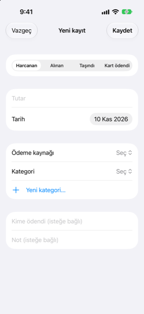

Kılavuz › Parayı kaydetme
Form doldurun
Bir harcamayı, geliri veya transferi formla kaydedin.
Form, olan tek bir şeyi kaydeder: harcanan para, alınan para, kendi hesaplarınız arasında bir taşıma veya banka hesabından ödenen bir kart borcu. Her alanı kendiniz kontrol etmek istediğinizde ya da Damla'nın okuduğu ama kendi başına tamamlayamadığı bir şeyi bitirmek için kullanın.

Ne zaman kullanılır
- Bir şeyi elle, alan alan kaydetmek istersiniz.
- Damla bir cümle ya da mesaj okudu ama bir şey eksik kaldı: Tamamla, anlaşılan olanların zaten doldurulduğu bu formu açar.
- Gelen kutusundaki bir öge tamamlandırmayı bekliyordur.
- Daha önce kaydettiğiniz bir şeyi değiştirmek ya da düzeltmek istersiniz.
Adım adım
- Bugün ya da Hareket ekranında artı düğmesine dokunun.
- Form doldurun düğmesine dokunun. Yeni kayıt ekranı açılır.
- Üstte türü seçin. Dört tür şunlardır: Harcanan, Alınan, Taşındı ve Kart ödendi.
- Tutarı yazın ve tarihi ayarlayın.
- Hesapları ve harcama ya da gelir için bir kategori seçin:
- Harcanan: Ödeme kaynağı olarak - bir banka, birikim, cüzdan ya da kart hesabı - ve bir kategori seçin. - Alınan: bir kategori ve paranın Nereye gittiği hesabı seçin. - Taşındı: Nereden ve Nereye seçin. Liste, banka, birikim ve cüzdan hesaplarınızı ve kişileri içerir. Aynı hesap olamazlar. - Kart ödendi: Ödeme kaynağı olarak - bir banka, birikim ya da cüzdan hesabı - ve Kart seçin.
- Harcanan ya da Alınan için kime ödediğinizi ya da kimin size ödediğini ("Kime ödendi (isteğe bağlı)" ya da "Kimden (isteğe bağlı)") ve bir not ekleyebilirsiniz.
- Kaydet düğmesine dokunun.
Başka bir para birimindeydi
Harcanan ya da Alınan için, hesabı seçtikten sonra form bir Başka para biriminde ödendi bölümü gösterir. Satıcı, hesabın para biriminden farklı bir para birimi tahsil ettiyse, Tahsil edilen para birimi altında onu seçin ve Tahsil edilen tutarı yazın. Damla sonra Tahmini kullan: … önerir - son döviz kuru ve bankanın marjından (Ayarlar'da ayarlanır) hesaplanan tutar. Kendiniz yazdığınız bir rakam tahminin yerini alır. O para birimi için henüz bir döviz kuru yoksa, karttan ne tahsil edildiyse onu yazın: hesap özetinde ya da bankanın uygulamasında bulunur.
Farklı para birimlerindeki iki hesap arasında Taşındı için bir Alınan bölümü görünür: alan hesabın para biriminde Alınan tutarı yazın.
Kaydettiğiniz bir şeyi değiştirme
- Hareket ekranını açın ve işlemeye dokunun. Aynı form, "Kaydı düzenle" başlığıyla açılır. (Zaten bölünmüş bir işlem onun yerine bölme sayfasını açar.)
- Gerekeni değiştirin ve Kaydet düğmesine dokunun. Kaldırmak için, Hareket listesinde işlemeyi silmek üzere kaydırın.
Bir işlemeyi bir kategoriyle kaydettikten sonra Damla, dükkânın ya da kişinin oraya ait olduğunu hatırlar; böylece onlardan gelen sonraki bildirim kendi kendine o kategoriye yazılır. Aynı dükkânın önceki işlemleri başka bir kategorideyse Damla, onları da değiştirmek isteyip istemediğinizi sorar: Onları şuna değiştir: … ya da Yalnızca bu. Yedek kategori olan Diğer hatırlanmaz.
Bilmeniz iyi olur
- Hesapları seçtikten sonra türü değiştirmek onları temizler; o yüzden önce türü seçin.
- Kategori seçicinin altında, hemen bir tane oluşturmak için Yeni kategori… düğmesine dokunun; anında seçilir.
- Yeni kategori sayfası addan bir simge önerir - spor salonu, evcil hayvanlar, çocuklar, sigorta, tamir ve daha pek çoğunun simgesi hazır gelir - ve bir ızgaradan kendinizinkini seçmenizi sağlar. Simge Hareket ekranında görünür.
- Aynı sayfa Ayarlar > Kategoriler yolundan da açılır; kategorileri daha sonra orada yeniden adlandırabilir ya da kaldırabilirsiniz.
- Damla'nın henüz bilmediği bir kart ya da hesapla ilgili bir banka bildirimini tamamlıyorsanız, formda hesabı seçmek ona son basamakları öğretir: ondan gelen sonraki bildirimde soru sorulmaz.
- Yalnızca kurdan tahmin edilmiş bir tutar tahmin olarak tutulur; hesap özeti onu bankanın gerçekten tahsil ettiği tutarla değiştirir. Gerçek rakamı öğrendiğinizde yazın.
İlgili
Anlaşılmayan ya da eksik bir şey mi var? support@raveniq.ai adresine yazın ve hangi sayfa olduğunu belirtin.